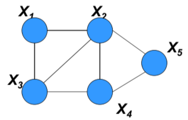
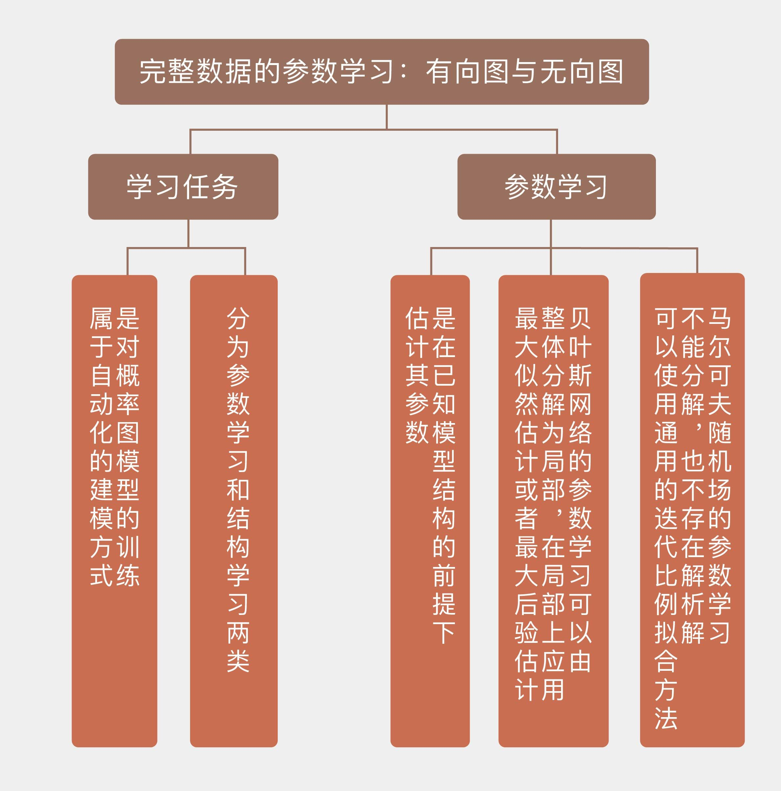

- 00 开篇词 打通修炼机器学习的任督二脉.md
- 01 频率视角下的机器学习.md
- 02 贝叶斯视角下的机器学习.md
- 03 学什么与怎么学.md
- 04 计算学习理论.md
- 05 模型的分类方式.md
- 06 模型的设计准则.md
- 07 模型的验证方法.md
- 08 模型的评估指标.md
- 09 实验设计.md
- 10 特征预处理.md
- 11 基础线性回归：一元与多元.md
- 12 正则化处理：收缩方法与边际化.md
- 13 线性降维：主成分的使用.md
- 14 非线性降维：流形学习.md
- 15 从回归到分类：联系函数与降维.md
- 16 建模非正态分布：广义线性模型.md
- 17 几何角度看分类：支持向量机.md
- 18 从全局到局部：核技巧.md
- 19 非参数化的局部模型：K近邻.md
- 20 基于距离的学习：聚类与度量学习.md
- 21 基函数扩展：属性的非线性化.md
- 22 自适应的基函数：神经网络.md
- 23 层次化的神经网络：深度学习.md
- 24 深度编解码：表示学习.md
- 25 基于特征的区域划分：树模型.md
- 26 集成化处理：Boosting与Bagging.md
- 27 万能模型：梯度提升与随机森林.md
- 28 最简单的概率图：朴素贝叶斯.md
- 29 有向图模型：贝叶斯网络.md
- 30 无向图模型：马尔可夫随机场.md
- 31 建模连续分布：高斯网络.md
- 32 从有限到无限：高斯过程.md
- 33 序列化建模：隐马尔可夫模型.md
- 34 连续序列化模型：线性动态系统.md
- 35 精确推断：变量消除及其拓展.md
- 36 确定近似推断：变分贝叶斯.md
- 37 随机近似推断：MCMC.md
- 38 完备数据下的参数学习：有向图与无向图.md
- 39 隐变量下的参数学习：EM方法与混合模型.md
- 40 结构学习：基于约束与基于评分.md
- 如何成为机器学习工程师？.md
- 总结课 机器学习的模型体系.md
- 总结课 贝叶斯学习的模型体系.md
- 结课 终有一天，你将为今天的付出骄傲.md
38 完备数据下的参数学习：有向图与无向图
介绍完表示和推断之后，我们将进入概率图模型的最后一个任务，也就是学习问题。
在推断任务中，我们会根据已知的模型来确定实例的特性，模型的结构和参数都作为输入的一部分出现。学习任务（model learning）则是将推断任务的过程颠倒过来，根据数据来构造出能够反映数据潜在规律的模型，也就是对概率图模型的训练。
概率图模型的学习和其他的机器学习一样，都属于自动化的建模方式。构造概率图模型的依据是变量之间的依赖关系，这些依赖关系的建立则需要仰赖垂直领域的先验知识。如果用纯人工的方式来构建概率图模型，那么在网络的节点数目较多、规模较大时，其工作量将是惊人的。将学习任务引入概率图模型之中，就可以基于结构化的数据高效地计算出网络的结构与参数，从而大大简化训练的流程。
根据学习对象的不同，学习任务可以大体分为参数学习和结构学习两类。
参数学习（parameter learning）是在已知图模型结构的前提下估计其参数，也就是节点之间的条件概率，这可以看成是个数值优化问题。
结构学习（structure learning）是在图模型完全未知的情况下先确定其结构，再根据结构来计算参数。结构学习可以看成是针对结构和参数的联合优化，可以存在单一的全局最优解。
今天这一讲中，我们先来看看参数学习，这个任务还可以进一步地分类。根据模型结构的不同，参数学习可以分为对贝叶斯网络的学习和对马尔可夫随机场的学习。
有向和无向的差异给两种结构的学习带来了截然不同的解决方案：在贝叶斯网络中，每一对节点之间都定义了归一化的条件概率分布，因此学习任务针对的是每个单独的局部；而在马尔可夫随机场中，归一化操作是通过全局化的划分函数来完成的，参数的全局耦合性使得这个复杂的任务不能被分解成若干简单任务的组合，造成了更大的学习难度。
最简单的参数学习问题是利用完全观测的数据估计贝叶斯网络的参数，网络结构中并不存在隐变量。从频率主义出发，可以基于似然概率最大化来实现参数的估计。最大似然估计的目标是找到让现有数据出现的概率、也就是似然函数最大化的那一组参数。根据贝叶斯网络的局部特性，全局似然函数可以被拆解成一些独立的局部似然函数的乘积，每个独立项都对应着网络中的一个条件概率分布，这就是似然函数的全局分解（global decomposition）。
似然概率的全局分解有什么作用呢？那就是简化参数估计的运算。基于全局分解可以单独对每个局部似然函数进行最大化，而无需考虑其他局部结构的影响，将每个局部似然函数的最优参数合并在一起，得到的就是全局似然函数的最优解。
这一技巧最简单而又最具代表性的应用就是朴素贝叶斯分类器。将类似然函数改写成属性似然函数的乘积就是基于朴素贝叶斯图结构的全局分解，在此基础上计算属性的似然概率，就是统计当每个属性取得不同的取值时，归属于某个类别的样本在这个类别所有样本中所占的比例。如果你对朴素贝叶斯还有些陌生，可以参考专栏的第28讲，以及“人工智能基础课”中的内容。
前面介绍的最大似然估计出自频率主义的视角，如果要从贝叶斯主义出发，就得先给每个参数设定先验分布，以实现最大后验估计。表示先验分布的变量一般来说会与现有贝叶斯网络的数据和结构独立，与原始的贝叶斯网络共同形成新的元网（meta-network）。可以证明，如果不同参数的先验分布是相互独立的，那么它们的后验分布也会继承这种独立性，所以对最大后验估计的求解也可以遵循从局部到整体的方式，这和最大似然估计是一致的。
不难看出，对完整观测的贝叶斯网络进行参数估计，就是将传统的最大似然估计和最大后验估计应用到有向图模型这个特定的场景中。图模型中的条件独立性还可以进一步将全局优化分解为相互独立的局部优化，从而实现一定的简化。
可是在马尔可夫随机场中，问题就没有这么简单了。考虑一个最简单的马尔可夫随机场\(A – B – C\)，这个图模型中的势函数有两个，分别是\(\\phi_1(A, B)\)和\(\\phi_2(B, C)\)，它的划分函数\(Z\)等于所有两个势函数的乘积对变量\(A, B, C\)所有可能的取值进行求和。在给定一组数据\(a, b, c\)时，这个实例的似然概率可以写成
\[ p(a, b, c) = \\dfrac{\\phi_1(a, b) \\cdot \\phi_2(b,c)}{Z} = \\dfrac{\\phi_1(a, b) \\cdot \\phi_2(b,c)}{\\sum\\limits_{a,b,c} \\phi_1(a, b) \\cdot \\phi_2(b,c)} \]
在对这个式子进行最大化时，就不能对\(\\phi_1(a, b)\)和\(\\phi_2(b, c)\)分开处理，各自求解最大值了。因为划分函数\(Z\)是由所有的参数共同决定的，无论是\(\\phi_1(a, b)\)还是\(\\phi_2(b, c)\)发生变化，都会导致\(Z\)发生变化。划分函数就像一条履带，将这两个因子像两个齿轮一样扣在一起，并将一个的变化传导给另一个，让两者必须作为一个整体来加以优化。
在马尔可夫随机场的参数学习中，上面乘积式中的每个因子都会被改写为对数线性的形式，也就是变量集特征函数的指数加权求和。这样一来，模型的参数就变成了对数线性模型中的权重，并通过对权重似然函数的最优化来实现参数学习。
利用划分函数是关于待估计参数的凸函数这一条件，可以证明对数似然函数是单峰函数，只有全局最优而没有局部最优。求解这个全局最优值就等价于找到让对数似然函数梯度为0的那一组参数，此时得到的最优解将和真实模型完全匹配。但问题是单凭这个准则不能给出问题的解析解，要计算出最优参数必须借助梯度法等最优化的方法。
虽然马尔可夫随机场不能像贝叶斯网络那样将整体化为局部之积，但它在结构上也是可以被分解的。如果马尔可夫随机场的图结构是弦图（chordal graph），那它就是可分解的（decomposable）。
什么是弦图？是指无向图中任意长度大于3的环路中都至少存在一条弦，也就是连接环路中不相交的顶点的无向边。下图就是一个弦图的实例，连接结点\(X_2\)和\(X_3\)的那条边就是弦。

具有弦图结构的马尔可夫随机场
可分解的马尔可夫随机场可以被划分成不同的团，每个团的势函数都可以被初始化为经验边际函数（empirical marginal）。如果这个团和其他团之间存在公共节点，那么它的势函数还要除以公共结点的经验边际函数。利用这种经验方式计算出每个团的势函数后，将得到的结果相乘，其结果就是最大似然估计的结果了。
还是以上面的弦图为例，结点\(X_1, X_2, X_3\)构成了一个团，其势函数可以表示为经验边际
\[ \\psi^{ML}_{1,2,3} = {\\tilde p}(x_1, x_2, x_3) \]
按同样的方式可以写出团\(X_2, X_3, X_4\)的经验势函数，但由于它和上面的团共享了公共结点\(X_2\)和\(X_3\)，就需要用这两个公共节点的经验势加以约化，其结果为
\[ \\psi^{ML}_{2,3,4} = \\dfrac{{\\tilde p}(x_2, x_3, x_4)}{{\\tilde p}(x_2, x_3)} \]
同理可以求出团\(X_2, X_4, X_5\)的势函数
\[ \\psi^{ML}_{2,4,5} = \\dfrac{{\\tilde p}(x_2, x_4, x_5)}{{\\tilde p}(x_2, x_4)} \]
三者相乘就是整个模型的似然函数，基于这一函数可以实现参数的最大似然估计。
可分解马尔可夫随机场的最大似然估计问题可以通过上面的方式简化，可如果图结构本身是不可分解的，模型的学习就要借助于更一般的方法，迭代比例拟合就是这样的一种方法。
迭代比例拟合（iterative proportional fitting）可以在给定经验边际的条件下求解未知的势函数，具体的方法是一个一个地去满足经验边际的约束，但满足下一个约束可能破坏上一个约束，所以需要通过迭代来逼近所有的边际条件。
马尔可夫随机场的运算成本较高，要简化运算的话，既可以使用近似推理过程计算梯度，也可以使用其他目标函数来代替似然函数。
近似推理是将学习问题当成推断问题来解决，包括传播近似推理和抽样近似推理两种技术，传播近似推理是将信念传播算法应用在马尔可夫随机场的学习中，抽样近似推理则通常借助MCMC，用平稳分布作为参数后验分布的估计。
用来代替似然函数的目标函数则包括伪似然函数、对比散度和最大间隔函数等，其中的对比散度已经被用于受限玻尔兹曼机的训练中。
今天我和你分享了概率图模型中的参数学习任务，包含以下四个要点：
参数学习的任务是在已知模型结构的前提下估计其参数，可以看成是模型的训练；
贝叶斯网络的参数学习可以由整体分解为局部，在局部上应用最大似然估计或者最大后验估计；
马尔可夫随机场的参数学习不能分解，也不存在解析解，可以使用通用的迭代比例拟合方法找到全局最优解；
马尔可夫随机场的参数学习可以通过近似推理和目标函数替换加以简化。
今天介绍的内容关注的是完备数据基础上的参数学习，如果数据集是不完备的，就可能会缺失某些变量的观测样本，或者存在不能被观测的隐变量。后一种情况可以通过EM算法来解决，那么前一种情况如何处理呢？
你可以查阅资料了解相关内容，并在这里分享你的见解。

© 2019 - 2023 Liangliang Lee. Powered by gin and hexo-theme-book.